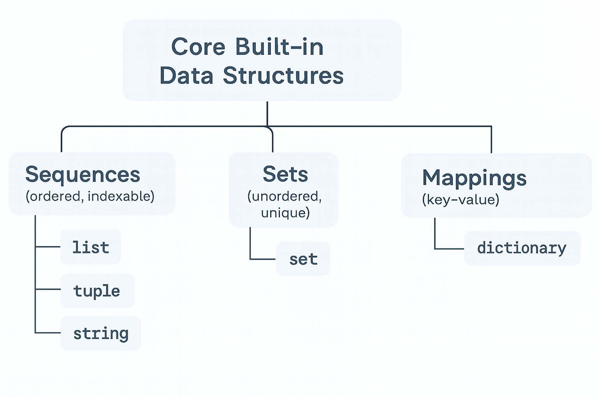

5 Data Structures
In data science, you’ll shape raw data before modeling. These built-ins are the foundation that explain why Series/DataFrame (pandas) and ndarray (NumPy) behave the way they do.
5.1 Primitives vs. Containers
- Primitive (single value):
int,float,bool,None - Containers (hold multiple values):
str,list,tuple,set,dict
Tip: Check any object’s type with
type(x).
5.2 Core Built-in Data Structures
5.2.1 Sequences (ordered, indexable)
Types: list, tuple, str
# list (mutable)
nums = [10, 20, 20, 30]
nums.append(40) # mutate in place
nums[0] = 11 # item assignment
nums_slice = nums[1:3] # slicing
# tuple (immutable)
pt = (42.0, -1.5) # cannot reassign pt[0]
# string (immutable sequence of characters)
s = "data"
s2 = s.upper() # returns a new string; s unchangedWhen to use:
list: grow/shrink, frequent edits, ordered datatuple: fixed-size records, function returns, hashable as dict keysstr: text processing (we’ll also usenltklater)
5.2.2 Sets (unordered, unique)
Types: set
a = {1, 2, 2, 3} # {1, 2, 3}
b = {3, 4}
a | b # union -> {1, 2, 3, 4}
a & b # intersection -> {3}
a - b # difference -> {1, 2}{1, 2}When to use:
- Deduplication, membership tests, fast set algebra.
5.2.3 Mappings (key–value)
Types: dict
student = {"name": "Alex", "year": 3, "major": "Stats"}
student["year"] = 4 # update
student["gpa"] = 3.7 # insert
for k, v in student.items(): # iterate keys & values
print(k, "->", v)name -> Alex
year -> 4
major -> Stats
gpa -> 3.7When to use:
- Labeled data, lookups, configuration/state.
5.3 Iterables vs. Iterators
In Python, an iterable is any object capable of returning its members one at a time, such as lists, tuples, strings, and dictionaries. You can loop over iterables using a for loop.
An iterator is an object that represents a stream of data; it produces the next value when you call next() on it. Iterators are created from iterables using the iter() function.
Key differences: - Iterables can be looped over, but do not remember their position. - Iterators remember their position and can only be advanced one item at a time.
Example:
my_list = [1, 2, 3]
my_iter = iter(my_list)
print(next(my_iter)) # 1
print(next(my_iter)) # 2
print(next(my_iter)) # 3Understanding the difference helps you write efficient loops and work with data streams in Python.
5.4 Common, Efficient Operations
5.4.1 Comprehensions
Comprehensions are a concise way to create lists, sets, or dictionaries from iterables by applying an expression to each item in an iterable (such as a list, tuple, or range) and optionally filtering the items based on a condition. They are a powerful and efficient way to generate new collections without the need for explicit loops.
Basic Syntax:
new_list = [expression for item in iterable if condition]- expression: What you want to include in the new list (or set/dict).
- item: Represents each element in the iterable as the comprehension iterates through it.
- iterable: The source of elements (list, tuple, range, etc.).
- condition (optional): A filter to control which items are included. If omitted, all items are included.
Why use comprehensions? - More readable and concise than loops. - Often faster than equivalent for-loops. - Preferred for simple transformations and filtering.
List comprehension example:
Create a list that has squares of natural numbers from 5 to 15.
sqrt_natural_no_5_15 = [(x**2) for x in range(5,16)]
print(sqrt_natural_no_5_15)[25, 36, 49, 64, 81, 100, 121, 144, 169, 196, 225]Create a list of tuples, where each tuple consists of a natural number and its square, for natural numbers ranging from 5 to 15.
sqrt_natural_no_5_15 = [(x,x**2) for x in range(5,16)]
print(sqrt_natural_no_5_15)[(5, 25), (6, 36), (7, 49), (8, 64), (9, 81), (10, 100), (11, 121), (12, 144), (13, 169), (14, 196), (15, 225)]Creating a list of words that start with the letter ‘a’ in a given list of words.
words = ['apple', 'banana', 'avocado', 'grape', 'apricot']
a_words = [word for word in words if word.startswith('a')]
print(a_words)['apple', 'avocado', 'apricot']Set comprehension:
unique_lengths = {len(word) for word in ['cat', 'dog', 'mouse']}
uniq_initials = {name[0].upper() for name in ["amy","ann","bob","amy"]}
print(uniq_initials)
print(unique_lengths){'B', 'A'}
{3, 5}Dictionary comprehension:
word_lengths = {word: len(word) for word in ['cat', 'dog', 'mouse']}
print(word_lengths){'cat': 3, 'dog': 3, 'mouse': 5}Comprehensions are preferred for simple transformations and filtering.
5.4.2 Membership & Lookups
Membership operations let you check if an item exists in a collection (like a list, set, or dictionary). Use in and not in for these checks. Lookups retrieve values by key or index, and are fastest in sets and dictionaries.
Examples: - 3 in [1, 2, 3] → True (checks if 3 is in the list) - 'a' in {'a': 1, 'b': 2} → True (checks if ‘a’ is a key in the dictionary) - 5 not in {1, 2, 3} → True (checks if 5 is not in the set)
Tip: - Dictionary and set lookups are very fast (constant time). - List and tuple membership checks are slower (linear time). - For safe dictionary lookups, use .get(key) to avoid errors if the key is missing.
5.4.3 Unpacking
Unpacking lets you assign elements of a collection (like a list, tuple, or string) to multiple variables in a single step. This makes your code more readable and concise, especially when working with structured data.
Basic Syntax:
pt = (3, 4)
x, y = pt # x=3, y=4
a, b, c = [1, 2, 3] # a=1, b=2, c=3You can also use unpacking in loops and with function arguments.
Extended Unpacking: Python allows you to use the * operator to capture multiple elements:
# Extended unpacking:
first, *rest = [10, 20, 30, 40] # first=10, rest=[20, 30, 40]
a, *mid, z = [1,2,3,4]
print(rest)
print(mid)[20, 30, 40]
[2, 3]Unpacking in Loops:
pairs = [(1, 'a'), (2, 'b'), (3, 'c')]
for num, char in pairs:
print(num, char)1 a
2 b
3 cUnpacking with Dictionaries:
student = {"name": "Alex", "year": 3}
for key, value in student.items():
print(key, value)name Alex
year 3Why use unpacking?
- Makes code cleaner and more readable
- Quick variable assignment
- Useful for working with structured data (e.g., tuples, lists, dicts)
- Avoids manual indexing
Tip: Unpacking works with any iterable, including lists, tuples, strings, and even the results of functions that return multiple values.
5.4.4 Sorting in Python Iterables
Sorting is a common task when working with data. Python provides flexible ways to order lists, tuples, and other iterables.
5.4.4.1 sorted() (built-in function)
- Returns a new sorted list from any iterable.
- Works with lists, tuples, strings, sets, and more.
- Does not modify the original iterable.
nums = [3, 1, 4, 1, 5]
print(sorted(nums)) # [1, 1, 3, 4, 5]
print(nums) # [3, 1, 4, 1, 5] (unchanged)
word = "python"
print(sorted(word)) # ['h', 'n', 'o', 'p', 't', 'y'][1, 1, 3, 4, 5]
[3, 1, 4, 1, 5]
['h', 'n', 'o', 'p', 't', 'y']5.4.4.2 .sort() (list method)
In-place sort: modifies the list itself.
Only available for lists (not other iterables).
Returns
None.
nums = [3, 1, 4, 1, 5]
nums.sort()
print(nums) # [1, 1, 3, 4, 5][1, 1, 3, 4, 5]5.4.4.3 Reverse Sorting
Both sorted() and .sort() accept a reverse argument.
nums = [3, 1, 4, 1, 5]
print(sorted(nums, reverse=True))[5, 4, 3, 1, 1]5.4.4.4 Sorting with a key
The key parameter lets you customize sorting logic.
# Sort by string length
words = ["pear", "apple", "banana", "kiwi"]
print(sorted(words, key=len))
# ['kiwi', 'pear', 'apple', 'banana']
# Sort by last character
print(sorted(words, key=lambda w: w[-1]))
# ['banana', 'pear', 'apple', 'kiwi']['pear', 'kiwi', 'apple', 'banana']
['banana', 'apple', 'kiwi', 'pear']5.4.4.5 Sorting Complex Data
For lists of tuples or dicts, use key.
# Sort by the second element of each tuple
pairs = [("a", 3), ("b", 1), ("c", 2)]
print(sorted(pairs, key=lambda t: t[1]))
# [('b', 1), ('c', 2), ('a', 3)]
# Sort list of dicts by a field
students = [
{"name": "Alice", "grade": 85},
{"name": "Bob", "grade": 92},
{"name": "Chen", "grade": 78}
]
print(sorted(students, key=lambda s: s["grade"]))[('b', 1), ('c', 2), ('a', 3)]
[{'name': 'Chen', 'grade': 78}, {'name': 'Alice', 'grade': 85}, {'name': 'Bob', 'grade': 92}]Sorting strings alphabetically vs. numerically:
nums = ["10", "2", "1"]
print(sorted(nums))
print(sorted(nums, key=int))['1', '10', '2']
['1', '2', '10']5.4.4.6 Mini Exercises
Sort [10, 2, 33, 25, 7] in descending order.
Given words = [“data”, “python”, “AI”, “science”], sort alphabetically ignoring case.
Sort [(“Ann”, 22), (“Bob”, 19), (“Chen”, 22)] by age, preserving name order when ages match.
5.4.5 Lambda Functions in Python
Sometimes you only need a tiny one-off function for a specific task (like sorting by length or filtering items). Writing a full def feels heavy.
That’s where lambda functions help.
Syntax
lambda parameters: expression- Creates an anonymous function (no name required).
- Must contain a single expression (not multiple statements).
- Automatically returns the value of the expression.
square = lambda x: x**2
print(square(5)) # 2525Using Lambda Functions
- With
sorted()
words = ["pear", "apple", "banana", "kiwi"]
# Sort by word length
print(sorted(words, key=lambda w: len(w)))
# Sort by last character
print(sorted(words, key=lambda w: w[-1]))['pear', 'kiwi', 'apple', 'banana']
['banana', 'apple', 'kiwi', 'pear']- With
map()andfilter()
nums = [1, 2, 3, 4, 5]
# Square each number
print(list(map(lambda x: x**2, nums)))
# Keep only even numbers
print(list(filter(lambda x: x % 2 == 0, nums)))[1, 4, 9, 16, 25]
[2, 4]- With
reduce()(fromfunctools)
from functools import reduce
nums = [1, 2, 3, 4, 5]
product = reduce(lambda x, y: x * y, nums)
print(product) # 120120Key Takeaways:
lambda= quick, throwaway function for one-liners- use
defif the function- has multiple steps
- is reused often
5.4.5.1 Mini Exercises
- Use
lambdawithsorted()to order the list:
nums = [-3, 1, -2, 5, 0]- Use
lambdawithfilter()to keep only names starting with a vowel:
names = ["Alice", "Bob", "Eve", "Uma", "Sam"]- Use
lambdawithmap()to convert Celsius to Fahrenheit:
temps_c = [0, 20, 37, 100]5.4.6 enumerate()
The enumerate() function is a built-in Python tool that adds a counter to any iterable, returning pairs of (index, item) as you loop. This is especially useful when you need both the item and its position in a loop.
Syntax:
for index, value in enumerate(iterable, start=0):
# use index and valueiterable: Any sequence (list, tuple, string, etc.)start: Optional, sets the starting index (default is 0)
Why use enumerate()?
- Makes code cleaner and less error-prone
- Avoids manual index tracking with a separate variable
- Works with lists, tuples, strings, and more
Example:
fruits = ['apple', 'banana', 'cherry']
for idx, fruit in enumerate(fruits):
print(idx, fruit)0 apple
1 banana
2 cherryTip: You can set the starting index with the start argument, e.g. enumerate(my_list, start=1).
Use enumerate() for readable, efficient loops when you need both index and value.
5.4.7 zip()
The zip() function combines two or more iterables (like lists, tuples, or strings) into tuples, pairing elements by their position. This is useful for parallel iteration, creating pairs, or merging data from multiple sources.
Syntax:
zip(iterable1, iterable2, ...)- Each tuple contains one element from each iterable, matched by position.
- Stops at the shortest iterable.
Why use zip()? - Parallel iteration over multiple sequences - Pairing related data (e.g., names and scores) - Creating dictionaries from two lists
Example:
names = ['Alice', 'Bob', 'Chen']
scores = [85, 92, 78]
for name, score in zip(names, scores):
print(name, score)Alice 85
Bob 92
Chen 78# Creating a dictionary from two lists:
gradebook = dict(zip(names, scores))
print(gradebook){'Alice': 85, 'Bob': 92, 'Chen': 78}Tip: - You can use zip(*zipped) to unzip a list of tuples back into separate lists. - If the input iterables are different lengths, zip() stops at the shortest one.
5.4.8 Common Functions for Iterables
Python provides a variety of built-in functions to operate on iterables, making it easy to manipulate, process, and analyze collections like lists, tuples, strings, sets, and dictionaries. Below is a list of commonly used built-in functions specifically designed for iterables.
| Function | Description | Example |
|---|---|---|
len() |
Returns the number of elements in an iterable. | len([1, 2, 3]) → 3 |
min() |
Returns the smallest element in an iterable. | min([3, 1, 4]) → 1 |
max() |
Returns the largest element in an iterable. | max([3, 1, 4]) → 4 |
sum() |
Returns the sum of elements in an iterable (numeric types only). | sum([1, 2, 3]) → 6 |
sorted() |
Returns a sorted list from an iterable (does not modify the original). | sorted([3, 1, 2]) → [1, 2, 3] |
reversed() |
Returns an iterator that accesses the elements of an iterable in reverse. | list(reversed([1, 2, 3])) → [3, 2, 1] |
enumerate() |
Returns an iterator of tuples containing indices and elements of the iterable. | list(enumerate(['a', 'b', 'c'])) → [(0, 'a'), (1, 'b'), (2, 'c')] |
all() |
Returns True if all elements of the iterable are true (or if empty). |
all([True, 1, 'a']) → True |
any() |
Returns True if any element of the iterable is true. |
any([False, 0, 'b']) → True |
str.join(iterable) |
Joins elements of an iterable (e.g., list, tuple) into a single string, using the given string as a separator. | ''.join(['a', 'b', 'c']) → 'abc' |